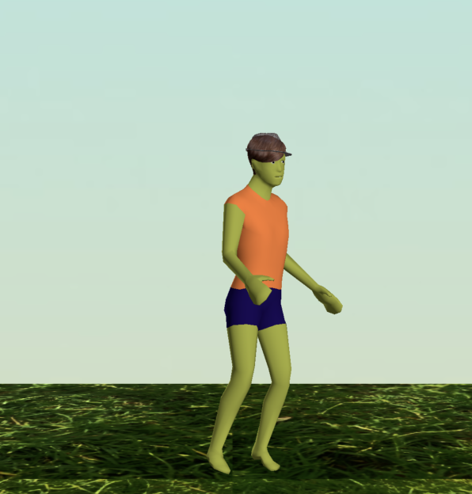
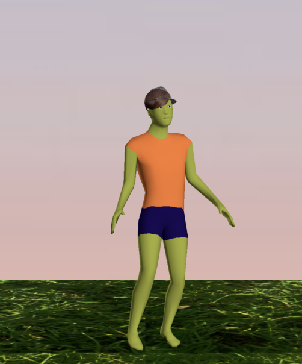
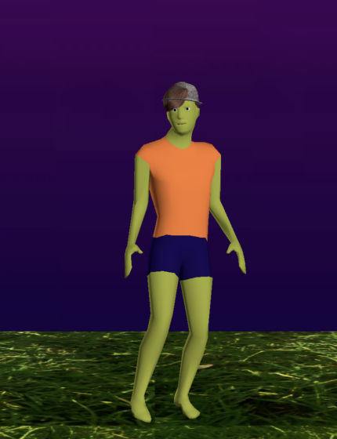

App Logo
QuestMates is an iOS AR social game inspired by Pokémon GO, Pikmin Bloom, and Roblox. Players can match with others for AR challenges, earn currency, customize avatars, and socialize through Firebase chat rooms.
The app also uses the player's location and WeatherStack API data to dynamically change its environment based on current weather conditions.
iPhone
iPad
QuestMates uses the player's location with the WeatherStack API to dynamically change the app's visual environment based on current conditions and time of day.
Day

Evening

Night

Early wireframes were used to plan the app's navigation, interface hierarchy, social features, and gameplay flow before implementation.
QuestMates UI Wireframes